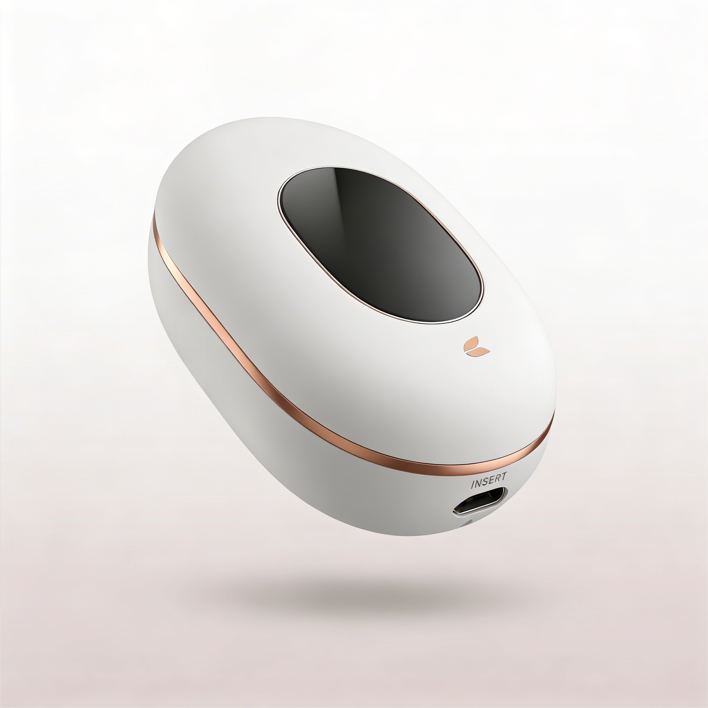

Simple
패널 수를 줄이고, 데이터가 있는 이유가 분명한 영역만 남깁니다.
이번 방향은 시각적 장식보다 데이터 구조를 앞에 둡니다. 여성스러움은 과장된 감성이 아니라 블러시 톤, 곡선, 부드러운 라운드에서만 남기고, 화면은 더 차분하고 기능적으로 정리했습니다.

메인 제품 이미지는 그대로 유지하면서, 화면 주변 구조만 더 정리된 방향으로 재해석했습니다.
이번 버전은 가시적인 럭셔리보다 정제된 운영감에 가깝습니다. 감성은 줄이고, 분석과 안정감을 늘렸습니다.
패널 수를 줄이고, 데이터가 있는 이유가 분명한 영역만 남깁니다.
핑크를 많이 쓰지 않고, 부드러운 라운드와 로즈 블러시 포인트만 사용합니다.
요약, 비교, 시계열, 상태 태그를 더 명확하게 드러내는 구성으로 바꿉니다.
얇은 선, 넓은 여백, 무광의 색면 중심으로 화면을 더 가볍게 유지합니다.
원본과 동일한 데이터 계약을 쓰되, 예외 상태를 더 분석 친화적으로 보여줍니다.
홈과 결과 화면은 더 표 형태로, 가이드는 더 단계형으로, 트렌드는 더 분석 보드처럼 재구성했습니다.
데이터 타입은 그대로 두고, 해석 문장은 더 기능적으로 정리했습니다.
예외 상태에서도 불필요한 감성 문구를 줄이고 지금 무엇이 가능한지만 먼저 보이게 합니다.
상태 태그, 짧은 비교 메모, 작은 차트를 통해 한 손으로도 비교 맥락을 읽게 합니다.
모든 방향에서 결과는 추세 참고용으로 제한하고, 확정 진단처럼 보이는 문장을 제거합니다.